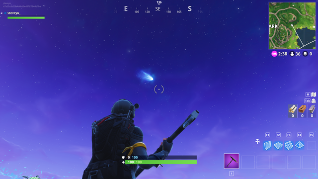
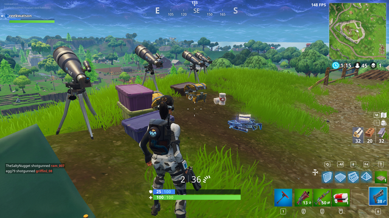
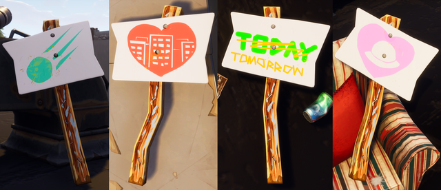
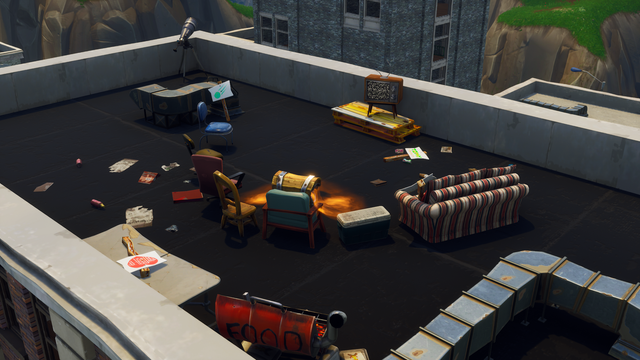
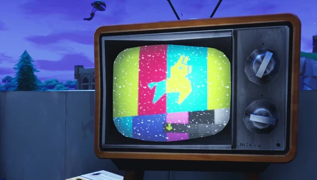
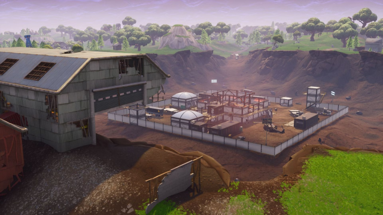

Introduction
This is a website to layout the entire lore of Fortnite Battle Royale, I will try and be as
accurate as possible but some mistakes may be present.
*Anything on this page is subject to change, like text and layout. The text will
definitely get rewritten due to it being bad.*
Initially released in 2017 as a side game to STW, BR would
use the battle royale formula that was popular at the time of release, 100 players would jump off a bus
and sky dive to a set of POIs set on an island, as the game
continues the safe area gets smaller and smaller by a danger zone called "The Storm", at the end
of the game the last person standing wins. The game uses a season system for major updates new
battle passes, these seasons are then spilt up into chapters, so far we have had four chapters,
Chapter 1 running from September of 2017 to October of 2019 with a total of "eleven" (there was a
preseason before Season 1 began) seasons, Chapter
2 running from October of 2019 to December of 2021 with a total of eight seasons, Chapter 3
running from December of 2021 to December of 2022 with a total of four seasons, Chapter 4 from
December of 2022 to Current day so far with four seasons with a rumored fifth season for five in
total.
For a full rundown here is the Fortnite Battle Royale wikipedia page:
Source: Wikipedia
Preseason & Chapter 1 Season 1
The Beginning
*Until Season 5 there wasn't any official tagline
for the seasons so I added my own, when the real taglines get added they will be in quotation marks.
Preseason Launch Trailer
Source: GameTrailers on Youtube
Season 1 "Launch Trailer"
Source: Fortnite on Youtube
*So technically this is more of a Fortnitemares trailer than a season trailer, but if you
look at the date at the end of the video it is the day of Season 1's release (and because trailers where
inconsistent in the beginning, Im gonna count it).*
In terms of lore Preseason did technically add the island so there is
that. but other than that there isn't much until Season 3
which is when the lore really started. Though in early BR there was a theory that BR was just a training
simulation for STW, which would make sense before the lore became it's own thing (I am going to stay
mostly away from theories, but I thought it fun to include this one).
Preseason Changelog
- v1.6, Sep 7th, 2017
- -Added Crouching
- -Added The Athena Battle Royale Island
- -Added New POI, Anarchy Acres
- -Added New POI, Dusty Depot
- -Added New POI, Fatal Fields
- -Added New POI, Flush Factory
- -Added New POI, Greasy Grove
- -Added New POI, Lonely Lodge
- -Added New POI, Loot Lake
- -Added New POI, Moisty Mire
- -Added New POI, Pleasant Park
- -Added New POI, Retail Row
- -Added New POI, Salty Springs
- -Added New POI, Tomato Town
- -Added New POI, Wailing Woods
- -Added The Battle Bus
- -Added The Assault Rifle
- -Added The Burst Assault Rifle
- -Added The Pump Shotgun
- -Added The Tactical Shotgun
- -Added The Submachine Gun
- -Added The Suppressed Submachine Gun
- -Added The Pistol
- -Added The Revolver
- -Added The Bolt-Action Sniper Rifle
- -Added The Semi-Automatic Sniper Rifle
- -Added The Grenade Launcher
- -Added The Rocket Launcher
- -Added Bandages
- -Added The Medkit
- -Added The Shield Potion
- -Added Grenades
- -Added Damage Traps
- -Added Ceiling Zapper
- -Added Wall Dynamo
- -Added Directional Jump Pads
- v1.6.3, Sep 26th, 2017
- -Added Squads
- -Added The Scoped Assault Rifle (Only Rare and Epic)
- -Added The Tactical Submachine Gun (Only Uncommon-Epic)
- v1.6.4, Sep 29th, 2017
- Balance Changes to The Assault Rifle
- v1.6.4 Hotfix, Oct 4th, 2017
- -Added Duos
- -Added Supply Drops
- -Added The Zapotron
- v1.7, Oct 5th, 2017
- -Vaulted The Zapotron
- v1.7 Hotfix, Oct 6th, 2017
- Changes to the Semi-Automatic Sniper Rifle, Scoped Assault Rifle, Grenade, Grenade Launcher,
Rocket Launcher, Submachine Gun
- v1.7.1 Oct 12th, 2017
- Gave Names to Dusty Depot, Salty Springs, and Tomato Town.
- v1.7.2 Oct 17th, 2017
- -Added Voice Chat
Changelog sourced from: Fortnite Wiki for Preseason Changelog
Season 1 Changelog
- v1.8 Oct 26th, 2017
- -Added a Xp Leveling System
- -Added The Seasonal Shop
- -Added Slurp Juice
- -Added The Pumpkin Launcher
- -Vaulted The Rocket Launcher
- v1.8.1 Nov 2nd, 2017
- -Bugfixes
- v1.8.2 Nov 8th, 2017
- -Added The Bush
- v1.9 Nov 17th, 2017
- -Added Launch Pads
- v1.9.1 Nov 29th, 2017
- -Added Smoke Grenades
- -Vaulted The Pumpkin Launcher
- -Unvaulted The Rocket Launcher
- v1.10 Dec 6th, 2017
- -Bugfixes
Changelog sourced from: Fortnite Wiki for Season 1 Changelog
*These changelogs mostly cover factors that affect gameplay, things like weapon
renames, model changes, etc aren't likely to get covered. If you want everything then head on
over to the Fortnite Wiki and read the fuller changelogs there.*
Chapter 1 Season 2
Tilted
Source: Fortnite on Youtube
Just like the Preseason and Season 1 nothing of note happens lore wise
because the game was still just starting out.
Season 2 Changelog
- v1.11, Dec 14th, 2017
- -Added The Battlepass
- -Added The Snowball Launcher
- -Vaulted The Grenade Launcher
- v1.11 Small Shield, Dec 19th, 2017
- -Added The Small Shield Potion
- -Removed The Ceiling Zapper
- -Removed The Wall Dynamo
- -Removed The Directional Jump Pad
- v1.11 Boogie Bomb, Dec 23rd, 2017
- -Added The Boogie Bomb
- v1.11 Silenced Pistol, Jan 2nd, 2018
- -Added Suppressed Pistol
- v2.1.0, Jan 10th, 2018
- -Added The Cozy Campfire
- v2.2.0, Jan 18th, 2018
- -Vaulted The Snowball Launcher
- -Unvaulted The Grenade Launcher
- -New POI, Haunted Hills
- -New POI, Junk Junction
- -New POI, Shifty Shafts
- -New POI, Snobby Shores
- -New POI, Tilted Towers
- -New Unnamed POI, Motel
- -New Unnamed POI, Outskirts
- -New Unnamed POI, Soccer Stadium
- -New Unnamed POI, Starry Suburbs (destroyed)
- -New Unnamed POI, Yonder Yard
- -Moisty Mire also became it's own biome
- v2.3.0, Jan 25th, 2018
- -Added The Chug Jug
- v2.4.0, Jan 31st, 2018
- -Added The Minigun
- v2.4.2, Feb 8th, 2018
- -Added Cupid's Crossbow
- v2.5.0, Feb 13th, 2018
- -Added Impulse Grenade
- -Vaulted The Submachine Gun
- -Chinese Themed Shrines Added Around The Island
Changelog sourced from: Fortnite Wiki for Season 2 Changelog
*These changelogs mostly cover factors that affect gameplay, things like weapon
renames, model changes, etc aren't likely to get covered. If you want everything then head on
over to the Fortnite Wiki and read the fuller changelogs there.*
Chapter 1 Season 3
Comet
This was the third season of battle royale, this season brought the hand cannon, the
crossbow, vaulted cupid's crossbow, added the hunting rifle, added a new POI, Lucky Landing, added
remote explosives, supply llama, vaulted smoke grenades, added the heavy shotgun, guided missile, egg
launcher, vaulted the grenade launcher, added the vending machine, port-a-fort, vaulted the egg
launcher, unvaulted the grenade launcher, added the light machine gun, vaulted the guided missile, added
clingers.
Source: Fortnite on Youtube
Welcome to Season 3 where things start to get a little more interesting.
The first thing of note is the amount of space related items in the battle pass, it seems as if the
battle pass was themed in a way to hint at something. This season saw the introduction to the story line
with a comet appearing in the sky towards the end of the season, this comet would be the start ot it
all.
Towards the end of Season 3 a comet would appear in the sky.

Source: IGN
If you played on controller you could randomly feel vibrations, these vibrations where
Morse Code. Discovored
by u/vigilancefoetracer on the r/FortNiteBR subreddit these vibrations translated to the
following message, "SOS D 5 418". SOS is commonly used as a distress signal, D5 relates to the map
coordinates of Tilted Towers, the 418 part could be a date of April 1, 2018, could this mean Tilted
Towers was gonna get destroyed?
Little campsites with telescopes where set up around the island to watch the sky.

Source: IGN
These signs could be found on a roof top in Tilted Towers, this spot was also set up to
watch the comet.

Source: IGN

Source: IGN
The Tv's on the island displayed a SMPTE color bar design with the Fortnite llama.

Source: IGN
As the end of Season 3 drew closer little meteors would fall out of the sky and crash onto
the island.

Source: IGN
The question still remained what was gonna happen? Will Tilted Towers get destroyed? When
will the comet hit?
Season 3 Changelog
- v3.0, Feb 20th, 2018
- -Added The Hand Cannon
- -Added The Crossbow
- -Vaulted Cupid's Crossbow
- v3.1.0, Feb 27th, 2018
- -New POI, Lucky Landing
- -Added The Hunting
- v3.2.0, March 7th, 2018
- -Teams of 20, LTM
- v3.3.0, March 14th, 2018
- A Comet Has Appeared In The Sky
- -Added Remote Explosives
- -Added Supply Llamas
- -Vaulted Smoke Grenades
- v3.3.1, March 22nd, 2018
- -Added The Heavy Shotgun
- v3.4.0, March 29th, 2018
- -Telescope Camps Have Appeared Around The Island
- -Added The Guided Missile
- -Added The Egg Launcher
- -Vaulted Grenade Launcher
- v3.4.0, April 4th, 2018 (Content Update, these are updates that didn't need a download)
- -Added Vending Machines
- v3.5, April 11th, 2018
- -Added The Port-A-Fort
- -Vaulted The Egg Launcher
- -Unvaulted The Grenade Launcher
- v3.5, April 18th, 2018 (Content Update)
- -Added The Light Machine Gun
- -Vaulted The Guided Missile
- v3.6, April 24th, 2018
- -A Camp Was Added On A Rooftop In Tilted Towers With Signs Waiting For The Comet
- -Tvs Started Showing The Test Pattern (April 25th, 2018)
- -Meteorites Start Falling Out Of The Sky (April 26th, 2018)
- -Added Clingers
Changelog sourced from: Fortnite Wiki for Season 3 Changelog
*These changelogs mostly cover factors that affect gameplay, things like weapon
renames, model changes, etc aren't likely to get covered. If you want everything then head on
over to the Fortnite Wiki and read the fuller changelogs there.*
Chapter 1 Season 4
Brace for Impact
Source: Fortnite on Youtube
As seen in the trailer, the meteor seen in the sky during Season 3 finally came crashing down into the island. The meteor didn't crash into Tilted Towers instead crashing into Dusty Depot, thus the POI has changed to Dusty Divot.

Source: Sportskeeda